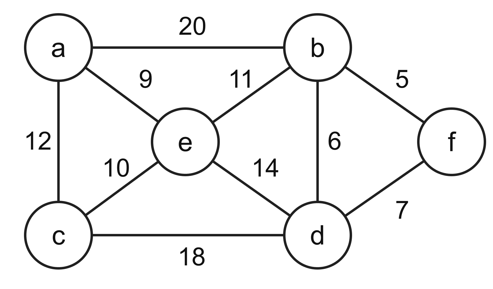

数据结构
2020-07
图的应用已知无向图 G 如下所示，使用克鲁斯卡尔（Kruskal）算法求图 G 的最小生成树，加到最小生成树中的边依次是（ ）。

答案
7
答案：A
本题讲解：克鲁斯卡尔算法按权选边求最小生成树
答案：A。Kruskal 的流程固定：边按权从小到大排序 → 依次考察，不成环就加入 → 选满 n−1 条边。
第一步：把边按权排序
图中各边从小到大：(b,f)=5，(b,d)=6，(d,f)=7，(a,e)=9，(c,e)=10，(b,e)=11，(a,c)=12，(e,d)=14，(c,d)=18，(a,b)=20。共 6 个顶点，需选 5 条边。
第二步：逐边考察
| 考察边 | 权 | 判定 | 连通分量变化 |
|---|---|---|---|
| (b,f) | 5 | 加入 | {b,f} |
| (b,d) | 6 | 加入 | {b,d,f} |
| (d,f) | 7 | 舍弃（d、f 已连通，成环） | 不变 |
| (a,e) | 9 | 加入 | {a,e} |
| (c,e) | 10 | 加入 | {a,c,e} |
| (b,e) | 11 | 加入，连通两大分量 | 全部 6 顶点 |
已选满 5 条边，最小生成树完成。
第三步：按加入顺序读答案
依次加入的边是 (b,f), (b,d), (a,e), (c,e), (b,e)，选 A。总权值 5+6+9+10+11 = 41。
易错点
- 选 B：边集一样但顺序错——(b,e) 权 11 大于 (a,e) 的 9 和 (c,e) 的 10，必须后加入。
- 漏算 (d,f)=7：它排在 (a,e) 之前，虽因成环被舍弃，也要占一个"考察位"，不能跳过。
- Prim 与 Kruskal 混淆：Prim 从顶点扩展、次序依赖起点；Kruskal 全局按权排序，加入顺序可预测。
口诀：先排序、后选边、成环就丢、五条收工。